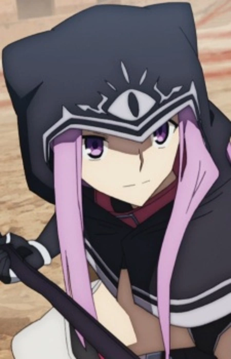
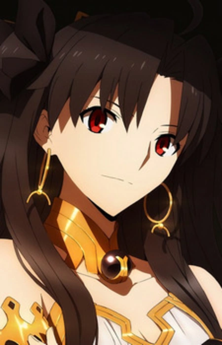
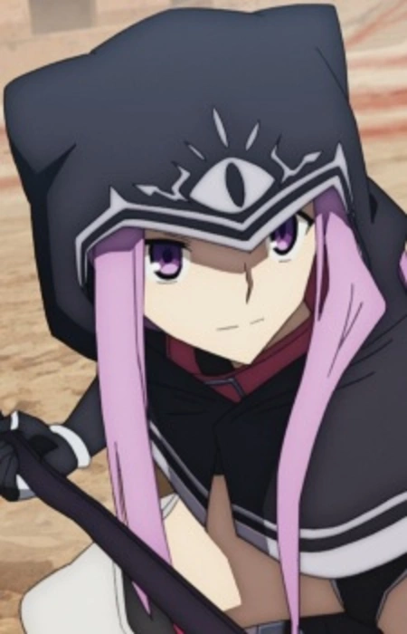
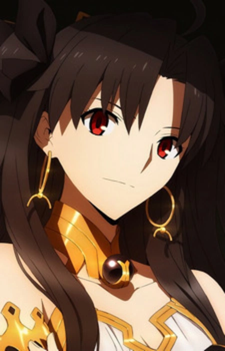
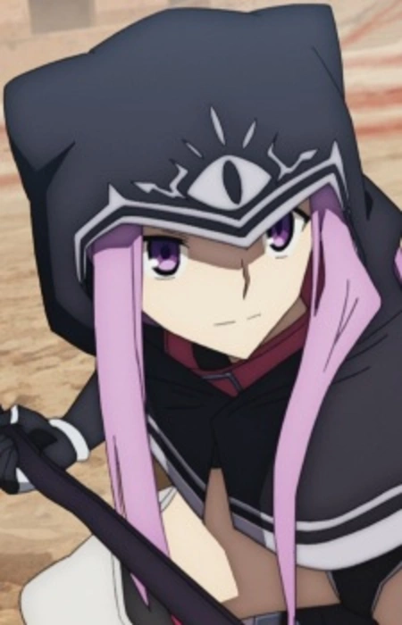
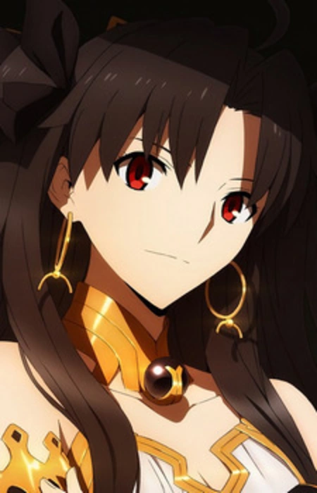

Главные герои
 



Рицука Фудзимару; Мэш Кириелайт; Мерлин,Ана; Гильгамеш; Иштар.
Седьмая Сингулярность была обнаружена — в древней Месопотамии в 2655 году до н. э. Земля Урука, которой правил мудрый царь Гильгамеш после своего возвращения из путешествия в поисках бессмертия, была великой и процветающей, пока не появились три богини и бесчисленные Демонические Звери. Эти враги поставили Урук на грань уничтожения. Используя «Рэйшифт» — метод путешествия во времени в прошлое — Фудзимару и Маш прибывают в земли Урука, чтобы столкнуться с городом-крепостью Урук и Абсолютным Демоническим Фронтом, отбивая устрашающую атаку Демонических Зверей. Там люди, которые живут полной жизнью, несмотря на серьезную угрозу, продолжают бороться за свое будущее. Божества и демонические звери нападают, а человечество противостоит им.
Главные герои


Рицука Фудзимару; Мэш Кириелайт; Мерлин,Ана; Гильгамеш; Иштар.